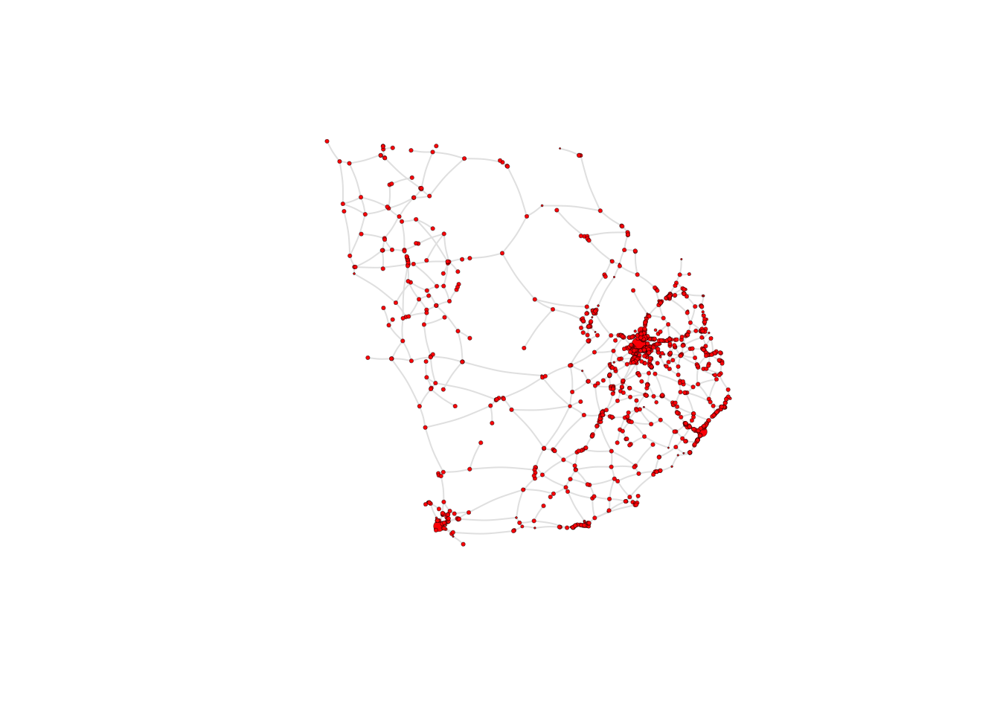
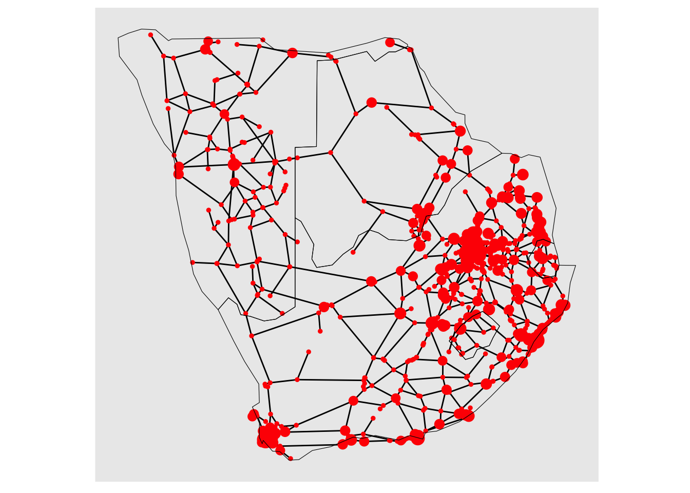
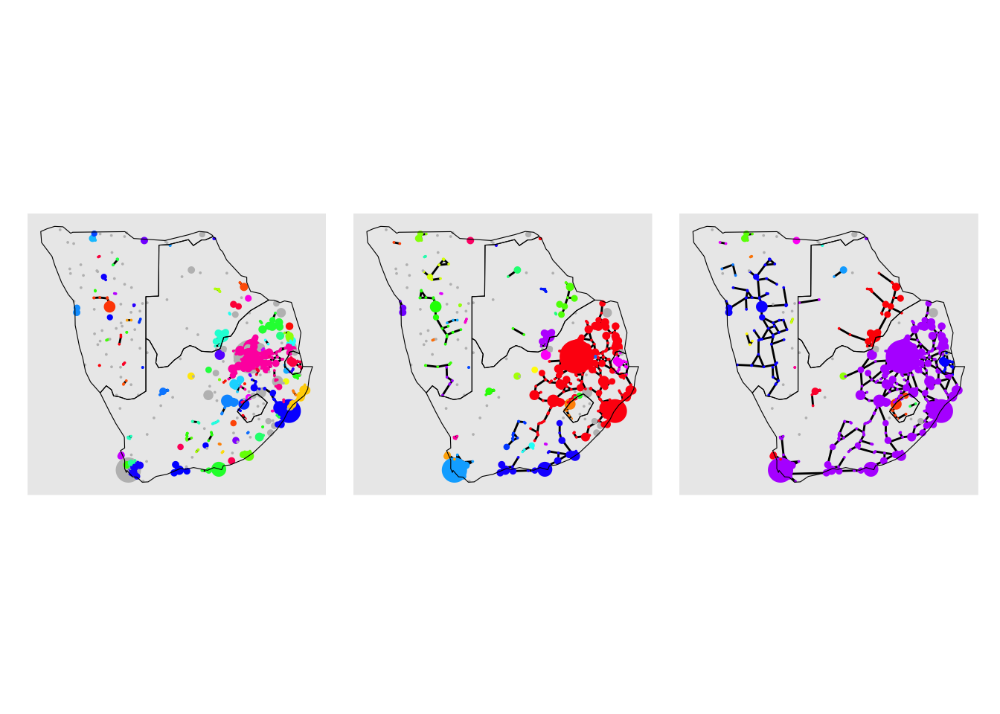

The following object is masked from 'package:igraph':
groups
The following object is masked from 'package:stats':
filter
library(RColorBrewer)library(rnaturalearth)
The legacy packages maptools, rgdal, and rgeos, underpinning the sp package,
which was just loaded, will retire in October 2023.
Please refer to R-spatial evolution reports for details, especially
https://r-spatial.org/r/2023/05/15/evolution4.html.
It may be desirable to make the sf package available;
package maintainers should consider adding sf to Suggests:.
The sp package is now running under evolution status 2
(status 2 uses the sf package in place of rgdal)
Support for Spatial objects (`sp`) will be deprecated in {rnaturalearth} and will be removed in a future release of the package. Please use `sf` objects with {rnaturalearth}. For example: `ne_download(returnclass = 'sf')`
library(sf)
Linking to GEOS 3.11.0, GDAL 3.5.3, PROJ 9.1.0; sf_use_s2() is TRUE
Introduction
The term percolation normally refers to the process whereby a fluid moves slowly through a porous material, for example, the percolation of rain water through rocks gives rise to aquifers. The study and modelling of this infiltration process in physics, chemistry and material science is known as percolation theory. If you think about it, a rock can be modelled as a three-dimensional lattice (if the rock was cube-shaped, this lattice would be like a Rubik cube but instead of being \(3 \times 3\times 3\), it is \(n\times n \times n\)). Then, the pores in the rock would be represented by “open sites” in this lattice (this would correspond to missing pieces in the Rubik cube) and the bits of the rock where there is material and therefore, no chance for the water to go through, would be represented by “closed sites” (this would correspond to pieces in the Rubik cube that are actually present). A typical question in percolation theory would then be as follows. If sites may be open with probability \(p\) or closed with probability \(1-p\) and these probabilities are assumed to be independent for each site, what is the probability that the water can go through the top to the bottom of the rock for a given value of \(p\)?
In recent decades, the mathematical study of percolation has been applied in a more general way, to understand the behavior of connected clusters or pathways in any system that can be modelled as a lattice or as a network. While the formulation of the percolation models varies slightly from lattices to networks, it follows the same principles. For example, let’s consider the spread of a certain pandemic, where contagion between two humans may take place with probability \(p\) if an infected individual spends more than 10 minutes at less than 2 meters away from a healthy one. Then, we can think of the pandemic as a fluid moving slowly, but instead of going through a porous rock, it goes through a social network of people. The people can be modelled as the nodes of the social network, and edges are present between two individuals if they spend long enough in close physical contact. Then, each edge or connection has an associated probability of contagion \(p\). Applying percolation theory, we could answer the question of “what are the chances that the pandemic makes its way from city A to city B given the structure of the network and the fact that the probability of contagion is \(p\)?”
Percolation theory can therefore be used in a variety of contexts to better understand the properties of a system characterised by the connections between its components. Here, we use percolation models to improve our understanding of the structure and resilience of the African road network.
As before, we start by loading the data corresonding to the nodes and edges of the African road network:
# Read edge and node data from URLsdf_edges <-read.csv("https://raw.githubusercontent.com/rafaelprietocuriel/AfricanUrbanNetwork/main/AfricaNetworkEdges.csv")df_nodes <-read.csv("https://raw.githubusercontent.com/rafaelprietocuriel/AfricanUrbanNetwork/main/AfricaNetworkNodes.csv", encoding='UTF-8')
# Filter the data frame df_nodes to only include rows where the 'Region' column is equal to "South"df_nodes <-subset(df_nodes, Region =="South")
# Filter the data frame df_edges to only include rows where the 'from' column is in the list of Agglomeration_ID values from df_nodesdf_edges <-subset(df_edges, from %in% df_nodes$Agglomeration_ID)# Filter the data frame df_edges to only include rows where the 'to' column is in the list of Agglomeration_ID values from df_nodesdf_edges <-subset(df_edges, to %in% df_nodes$Agglomeration_ID)
And we create an undirected graph from these data frames:
# Create an undirected graph 'G' from a data frame 'df_edges' representing edges and a data frame 'df_nodes' representing verticesG <-graph_from_data_frame(d = df_edges,vertices = df_nodes,directed =FALSE)
As before, we can visualise this network by running the code below
# Assign a 'size' attribute to vertices in graph 'G' based on a function of population dataV(G)$size <-0.5*(V(G)$Pop2015/10000)^0.4# Plot the graph 'G' with specific visual attributesplot(G, vertex.size =V(G)$size, # Set vertex size based on the 'size' attributeedge.arrow.size =0.15, # Set arrow size for directed edgesedge.arrow.width =0.2, # Set arrow width for directed edgesedge.curved =0.1, # Set edge curvatureedge.width =1, # Set edge widthedge.color ="gray90", # Set edge colorvertex.color ="red", # Set vertex colorvertex.frame.color ="black", # Set vertex frame (border) colorvertex.frame.width =0.2, # Set vertex frame (border) widthvertex.label =" ", # Set vertex labels to emptyvertex.label.color ="black", # Set vertex label colorvertex.label.cex =0.65) # Set vertex label size

Modelling community formation in the African road network
At the end of the previous session, we used the fast greedy algorithm to detect communities based on the topology of the African road network. We used an R implementation of the fast greedy algorithm through the built-in function cluter_fast_greedy(). While a built-in function gives us results in a very straightforward way, it also makes the process less transparent. In this section, we implement a percolation theory approach to model the formation of communities of nodes (cities) as the connectivity properties of the network are varied.
# Create a list to store the plotsplots_list <-list()i=1# Iterate over thresholdsfor (j inseq(60, 180, 60)) { df_edges_perco <-subset(df_edges, timeUCB < j) G_perco <-graph_from_data_frame(d = df_edges_perco,vertices = df_nodes,directed =FALSE)# Find connected components component_info <-components(G_perco)# Create a data frame with node names and corresponding colors df_nodes$component_ID = component_info$membership# Define a color palette for connected components (replace with your own colors) component_colors <-sample(rainbow(component_info$no), replace=FALSE)# Assign colors to nodes based on connected component node_colors <- component_colors[component_info$membership]# Create a data frame with node names and corresponding colors df_nodes$color = node_colors df_nodes$degree =degree(G_perco) df_nodes$color[df_nodes$degree ==0] <-"gray"V(G_perco)$size <-0.5*(V(G_perco)$Pop2015/10000)^0.4 custom_layout <-data.frame(name =V(G_perco)$name, # Node names from the graphx = df_nodes$x, # Custom x-coordinatesy = df_nodes$y # Custom y-coordinates )# Plot the graph 'G_' with specific visual attributes plot <-ggraph(as_tbl_graph(G_perco), custom_layout) +geom_edge_link() +geom_node_point(aes(color =factor(df_nodes$color)), size =V(G_perco)$size) +scale_color_identity() +theme(legend.position ="none")# Add the plot to the list plots_list[[i]] <- plot i <- i+1}
plots_list %>%wrap_plots(nrow =1)
Warning: Using the `size` aesthetic in this geom was deprecated in ggplot2 3.4.0.
ℹ Please use `linewidth` in the `default_aes` field and elsewhere instead.

world <-ne_download(scale ="small", category ="cultural", type ="admin_0_countries", returnclass ="sf")target_countries <-c("Botswana", "eSwatini", "Lesotho", "Namibia", "South Africa")world_subset <- world[world$SOVEREIGNT %in% target_countries, ]
df_nodes_perco_60 <- df_nodesdf_edges_perco_60 <-subset(df_edges, timeUCB <60)G_perco_60 <-graph_from_data_frame(d = df_edges_perco_60,vertices = df_nodes_perco_60,directed =FALSE)# Find connected componentscomponent_info_60 <-components(G_perco_60)# Create a data frame with node names and corresponding colorsdf_nodes_perco_60$component_ID = component_info_60$membership
# Define a color palette for connected components (replace with your own colors)component_colors_60 <-sample(rainbow(component_info_60$no), replace=FALSE)# Assign colors to nodes based on connected componentnode_colors_60 <- component_colors_60[component_info_60$membership]# Create a data frame with node names and corresponding colorsdf_nodes_perco_60$color = node_colors_60df_nodes_perco_60$degree =degree(G_perco_60)df_nodes_perco_60$color[df_nodes_perco_60$degree ==0] <-"gray"V(G_perco_60)$size <-0.5*(V(G_perco_60)$Pop2015/10000)^0.4custom_layout <-data.frame(name =V(G_perco_60)$name, # Node names from the graphx = df_nodes_perco_60$x, # Custom x-coordinatesy = df_nodes_perco_60$y # Custom y-coordinates)# Plot the graph 'G_' with specific visual attributesplot_60 <-ggraph(as_tbl_graph(G_perco_60), custom_layout) +geom_edge_link() +geom_node_point(aes(color =factor(df_nodes_perco_60$color)), size =V(G_perco_60)$size) +scale_color_identity() +theme(legend.position ="none") +geom_sf(data = world_subset, fill =NA, color ="black")
df_nodes_perco_120 <- df_nodesdf_edges_perco_120 <-subset(df_edges, timeUCB <120)G_perco_120 <-graph_from_data_frame(d = df_edges_perco_120,vertices = df_nodes_perco_120,directed =FALSE)# Find connected componentscomponent_info_120 <-components(G_perco_120)# Create a data frame with node names and corresponding colorsdf_nodes_perco_120$component_ID = component_info_120$membership
# Define a color palette for connected components (replace with your own colors)component_colors_120 <-sample(rainbow(component_info_120$no), replace=FALSE)# Assign colors to nodes based on connected componentnode_colors_120 <- component_colors_120[component_info_120$membership]# Create a data frame with node names and corresponding colorsdf_nodes_perco_120$color = node_colors_120df_nodes_perco_120$degree =degree(G_perco_120)df_nodes_perco_120$color[df_nodes_perco_120$degree ==0] <-"gray"V(G_perco_120)$size <-0.5*(V(G_perco_120)$Pop2015/10000)^0.4custom_layout <-data.frame(name =V(G_perco_120)$name, # Node names from the graphx = df_nodes_perco_120$x, # Custom x-coordinatesy = df_nodes_perco_120$y # Custom y-coordinates)# Plot the graph 'G_' with specific visual attributesplot_120 <-ggraph(as_tbl_graph(G_perco_120), custom_layout) +geom_edge_link() +geom_node_point(aes(color =factor(df_nodes_perco_120$color)), size =V(G_perco_120)$size) +scale_color_identity() +theme(legend.position ="none") +geom_sf(data = world_subset, fill =NA, color ="black")
df_nodes_perco_180 <- df_nodesdf_edges_perco_180 <-subset(df_edges, timeUCB <180)G_perco_180 <-graph_from_data_frame(d = df_edges_perco_180,vertices = df_nodes_perco_180,directed =FALSE)# Find connected componentscomponent_info_180 <-components(G_perco_180)# Create a data frame with node names and corresponding colorsdf_nodes_perco_180$component_ID = component_info_180$membership
# Define a color palette for connected components (replace with your own colors)component_colors_180 <-sample(rainbow(component_info_180$no), replace=FALSE)# Assign colors to nodes based on connected componentnode_colors_180 <- component_colors_180[component_info_180$membership]# Create a data frame with node names and corresponding colorsdf_nodes_perco_180$color = node_colors_180df_nodes_perco_180$degree =degree(G_perco_180)df_nodes_perco_180$color[df_nodes_perco_180$degree ==0] <-"gray"V(G_perco_180)$size <-0.5*(V(G_perco_180)$Pop2015/10000)^0.4custom_layout <-data.frame(name =V(G_perco_180)$name, # Node names from the graphx = df_nodes_perco_180$x, # Custom x-coordinatesy = df_nodes_perco_180$y # Custom y-coordinates)# Plot the graph 'G_' with specific visual attributesplot_180 <-ggraph(as_tbl_graph(G_perco_180), custom_layout) +geom_edge_link() +geom_node_point(aes(color =factor(df_nodes_perco_180$color)), size =V(G_perco_180)$size) +scale_color_identity() +theme(legend.position ="none") +geom_sf(data = world_subset, fill =NA, color ="black")
plot_60 + plot_120 + plot_180

Analysing network robustness
Changes in the size of the giant connected component as edges are removed
# Create an empty data frame to store component informationcomponents <-data.frame(nodeID =integer(0), component =integer(0), threshold =integer(0), gcc =integer(0))# Create empty lists to store thresholds, gccs, and ncsthresholds <-list()gccs <-list()ncs <-list()
# Iterate over thresholdsfor (i inseq(0, max(df_edges$l))) {# Create a copy of the graph G G_ <- G # Find indices of edges with lengths greater than the current threshold (i) edges_to_remove <-which(E(G_)$l > i)# Delete edges from G_ based on their indices G_ <-delete_edges(G_, edges_to_remove)# Get connected components of the modified graph G_ connected_components <-components(G_)# Create a data frame 'df_threshold' containing node IDs, component indices,# threshold values, and sizes of connected components df_threshold <-data.frame(nodeID = df_nodes$Agglomeration_ID, component = connected_components$membership, threshold =rep(i, times=nrow(df_nodes)), gcc =rep(max(connected_components$csize), times=nrow(df_nodes)))# Append 'df_threshold' to the 'components' data frame components <-rbind(components, df_threshold)# Append the current threshold value to the 'thresholds' list thresholds <-append(thresholds, i)# Append the maximum connected component size to the 'gccs' list gccs <-append(gccs, max(connected_components$csize))# Append the number of connected components to the 'ncs' list ncs <-append(ncs, connected_components$no)}# Display the first few rows of the 'components' data framehead(components)
# Plot the threshold values on the x-axis and the maximum connected component sizes (gccs) on the y-axisplot(thresholds, gccs)
# Plot the threshold values on the x-axis and the number of connected components (ncs) on the y-axisplot(thresholds, ncs)
Changes in the average distance as nodes are removed
# Create empty lists to store thresholds, gccs, and ncspopulations <-list()average_distances <-list()
# Iterate over thresholdsfor (node_id inV(G)) {# Retrieve the population attribute for the current node populations <-append(populations, V(G)[node_id]$Pop2015)# Create a copy of the graph G G_ <- G # Find indices of edges with lengths greater than the current threshold (i) G_ <-delete_vertices(G_, node_id) average_distance <-mean_distance(G_) average_distances <-append(average_distances, average_distance)}